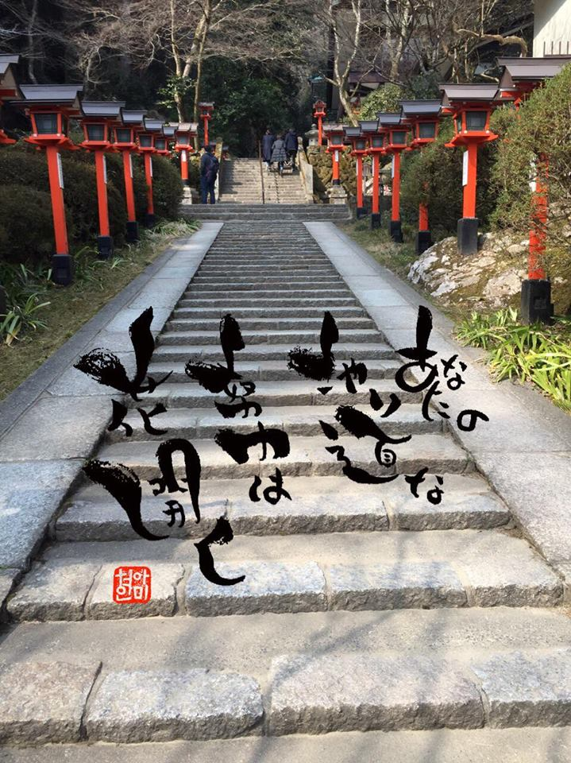

2016.11.17
涙もろくなったのでしょうか。
少し涙してしまった話です。
良かったら読んで下さい。
-----
その女性は何をしても続かない人でした
田舎から東京の大学に来て
部活やサークルに入るのは良いのですが
すぐイヤになって
次々と所属を変えていくような人だったのです
そんな彼女にも
やがて就職の時期がきました
最初
彼女はメーカー系の企業に就職します
ところが仕事が続きません
次に選んだ就職先は物流の会社です
自分が予想していた仕事とは違うという理由で
やはり半年ほどでやめてしまいました
次に入った会社は医療事務の仕事でした
しかしそれもやめてしまいました
いつしか彼女の履歴書には
入社と退社の経歴がズラッと並ぶようになっていました
すると、正社員に雇ってくれる会社がなくなってきます
結局
彼女は派遣会社に登録しました
ところが
派遣も勤まりません
すぐに派遣先の社員とトラブルを起こし
イヤなことがあればその仕事をやめてしまうのです
彼女の履歴書には
やめた派遣先のリストが長々と追加されていきました
ある日のことです
例によって
「自分には合わない」
などと言って派遣先をやめてしまった彼女に
新しい仕事先の紹介が届きました
スーパーでレジを打つ仕事でした
ある程度仕事に慣れてきて
「私はこんな単純作業のためにいるのではない」
と考え始めたのです
とはいえ
今までさんざん転職を繰り返し
我慢の続かない自分が
彼女自身も嫌いになっていました
もっとがんばらなければ
もっと耐えなければダメということは本人にもわかっていたのです
しかし
どうがんばってもなぜか続かないのです
この時
彼女はとりあえず辞表だけ作ってみたものの
決心をつけかねていました
するとそこへ
お母さんから電話がかかってきました
「帰っておいでよ」
受話器の向こうからお母さんのやさしい声が聞こえてきました
これで迷いが吹っ切れました
彼女はアパートを引き払ったらその足で辞表を出し
田舎に戻るつもりで部屋を片付け始めたのです
長い東京生活で
荷物の量はかなりのものです
あれこれ段ボールに詰めていると
机の引き出しの奥から1冊のノートが出てきました
小さい頃に書きつづった大切な日記でした
パラパラとめくっているうち
彼女は
「私はピアニストになりたい」
と書かれているページを発見したのです
そう
彼女の高校時代の夢です
「そうだ
あの頃
私はピアニストになりたくて
練習をがんばっていたんだ。。。」
彼女は思い出しました
なぜかピアノの稽古だけは長く続いていたのです
しかし
いつの間にかピアニストになる夢はあきらめていました
彼女は心から夢を追いかけていた自分を思い出し
本当に情けなくなりました
「あんなに希望に燃えていた自分が今はどうだろうか
自分が悪いのはわかっているけど
なんて情けないんだろう
そして私は
また今の仕事から逃げようとしている。。。」
そして彼女は日記を閉じ
泣きながらお母さんにこう電話したのです
「お母さん
私 もう少しここでがんばる」
彼女は用意していた辞表を破り
翌日もあの単調なレジ打ちの仕事をするために
スーパーへ出勤していきました
ところが
「2，3日でいいから」
とがんばっていた彼女に
ふとある考えが浮かびます
「私は昔
ピアノの練習中に何度も何度も弾き間違えたけど
繰り返し弾いているうちに
どのキーがどこにあるかを指が覚えていた
そうなったら鍵盤を見ずに
楽譜を見るだけで弾けるようになった」
彼女は昔を思い出し
心に決めたのです
「そうだ
私は私流にレジ打ちを極めてみよう」と
レジは商品毎に打つボタンがたくさんあります
彼女はまずそれらの配置をすべて頭に叩込むことにしました
覚え込んだら
あとは打つ練習です
彼女はピアノを弾くような気持ちでレジを打ち始めました
そして数日のうちに
ものすごいスピードでレジが打てるようになったのです
すると不思議なことに
これまでレジのボタンだけ見ていた彼女が
今まで見もしなかったところへ目がいくようになったのです
最初に目に映ったのはお客さんの様子でした
「ああ
あのお客さん
昨日も来ていたな」
「ちょうどこの時間になったら子ども連れで来るんだ」
とか
いろいろなことが見えるようになったのです
それは彼女のひそかな楽しみにもなりました
相変わらず指はピアニストのように
ボタンの上を飛び交います
そうしていろいろなお客さんを見ているうちに
今度はお客さんの行動パターンやクセに気づいていくのです
「この人は安売りのものを中心に買う」
とか
「この人はいつも店が閉まる間際に来る」
とか
「この人は高いものしか買わない」
とかがわかるのです
そんなある日
いつも期限切れ間近の安い物ばかり買うおばあちゃんが
5000円もするお頭付きの立派なタイをカゴに入れてレジへ持ってきたのです
彼女はビックリして
思わずおばあちゃんに話しかけました
「今日は何かいいことがあったんですか？」
おばあちゃんは彼女ににっこりと顔を向けて言いました
「孫がね
水泳の賞を取ったんだよ
今日はそのお祝いなんだよ
いいだろう
このタイ」
と話すのです
「いいですね
おめでとうございます」
嬉しくなった彼女の口から
自然に祝福の言葉が飛び出しました
お客さんとコミュニケーションをとることが楽しくなったのは
これがきっかけでした
いつしか彼女はレジに来るお客さんの顔をすっかり覚えてしまい
名前まで一致するようになりました
「○○さん
今日はこのチョコレートですか
でも今日はあちらにもっと安いチョコレートが出てますよ」
「今日はマグロよりカツオのほうがいいわよ」
などと言ってあげるようになったのです
レジに並んでいたお客さんも応えます
「いいこと言ってくれたわ
今から換えてくるわ」
そう言ってコミュニケーションをとり始めたのです
彼女は
だんだんこの仕事が楽しくなってきました
そんなある日のことでした
「今日はすごく忙しい」
と思いながら、彼女はいつものようにお客さんとの会話を楽しみつつレジを打っていました
すると、店内放送が響きました
「本日は大変混み合いまして大変申し訳ございません
どうぞ空いているレジにお回りください」
ところが、わずかな間をおいて、また放送が入ります
「本日は混み合いまして大変申し訳ありません
重ねて申し上げますが、どうぞ空いているレジのほうへお回りください」
そして3回目
同じ放送が聞こえてきた時に
初めて彼女はおかしいと気づき
周りを見渡して驚きました
どうしたことか5つのレジが全部空いているのに
お客さんは自分のレジにしか並んでいなかったのです
店長があわてて駆け寄ってきます
そしてお客さんに
「どうぞ空いているあちらのレジへお回りください」
と言ったその時です
お客さんは店長に言いました
「放っておいてちょうだい、私はここへ買い物に来てるんじゃない
あの人としゃべりに来てるんだ、だからこのレジじゃないとイヤなんだ」
その瞬間、レジ打ちの女性はワッと、泣き崩れました
別のお客さんが店長に言いました
「そうそう、私たちはこの人と話をするのが楽しみで来てるんだ
今日の特売はほかのスーパーでもやってるよ、だけど私は
このおねえさんと話をするためにここへ来ているんだ
だからこのレジに並ばせておくれよ」
彼女はポロポロと泣き崩れたまま
レジを打つことができませんでした
仕事というのはこれほど素晴らしいものなのだと、初めて気づきました
すでに彼女は昔の自分ではなくなっていたのです
出典:木下晴弘著 涙の数だけ大きくなれる! ﾌｫﾚｽﾄ出版より
